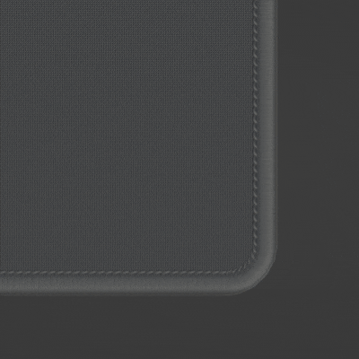
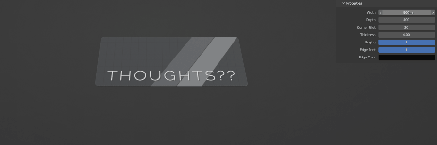
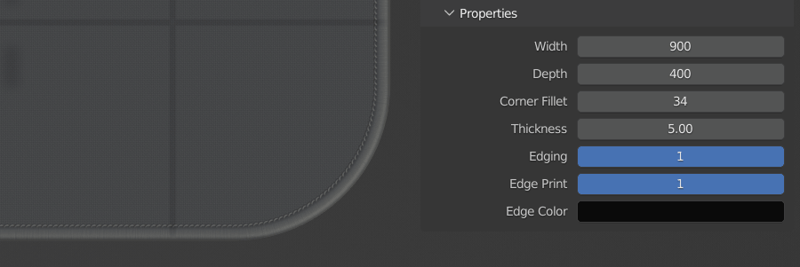
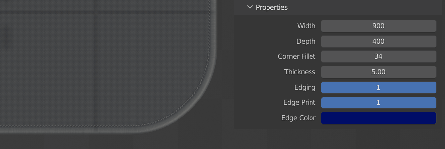
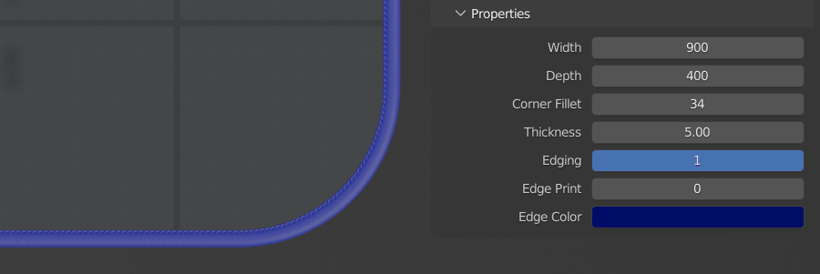
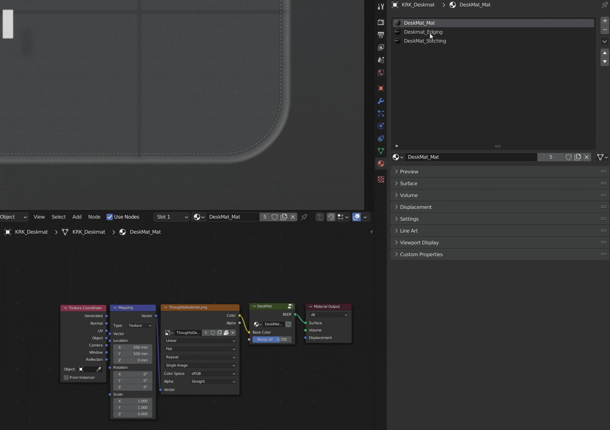
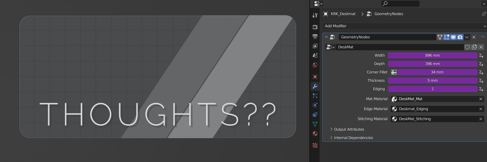

桌垫#
桌垫是程序化建模的，边缘缝线同样程序化生成。

尺寸#
它可以在 KRK 面板里自定义：最大 1m x 1m，圆角最大 500mm，厚度最大 1cm。

包边#

这个选项会完全关闭边缘缝线。
边缘印刷#

用这个选项关掉边缘印刷，改用纯色包边。
包边颜色#

包边用纯色时，在这里设颜色。
材质#
要换材质，得编辑已经应用上的材质：在材质属性里选中它，到着色器编辑器里改。

也可以在物体属性的修改器面板里替换当前材质、换成别的材质。

导出#
要把桌垫导出到其他软件，需要先转换缝线，再把 UV 属性转成 UV 贴图。具体做法参见 USB 线材页面里的导出章节。